|
Dog Shit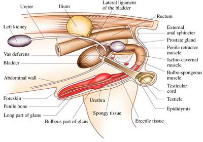No lengthy, philosophical examination of dog shit would be complete without first pondering more existential questions like why dogs shit, and how. The answers may surprise and delight you. There are many interlocking components to the dog shit process. Food eaten by a dog (cupcakes, floppy disks, corn dogs, Vicodin) must first be processed into simpler, smaller elements suitable for delivery via the bloodstream to muscle and fatty tissue in the canine's body. The digestive system of your dog begins at the lips and finishes under the tail, at a puckering donut-shaped curiosity scientists have nicknamed the anus. When you see a dog (or cat) who appears to be licking his or her own balls, it's more likely the animal is suffering from anal gland disease. Both the external anal sphincter and anal sac can become impacted or infected as the result of contaminants left behind by the anus, leading to feelings of pain and pressure best relieved by several hours of enthusiastic licking. The domesticated dog's alternative to licking is 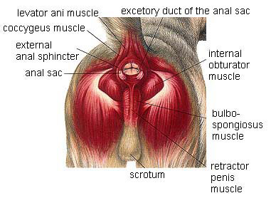the act of scooting or scootching -- sliding one's anus across a coarse or thickly carpeted floor to soothe "itchy" feelings near the tail and hindquarters. Another reason for licking and scooting might be worms, a subject beyond the range of this modest tutorial. For those interested in further study, putting dog shit under a microscope can yield a full afternoon of excitement and wonder. Monocystis sporocysts are wiggly, protozoan parasites visible in the feces of dogs who have eaten infected earthworms. Cells in a dog's body naturally generate waste by-products which must be eliminated through the kidneys, the lungs, the skin and digestive system. These organs are part of a larger excretory system. Of course, not everything a dog eats can be digested properly, or even used to store energy. The unwanted digestive material left behind on city sidewalks and community 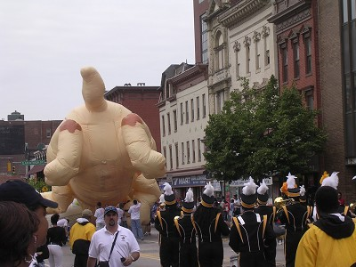dog parks is called feces in America, and faeces to those residing in the United Kingdom, Ireland, Wales, or Scotland. In Sydney, Australia, one can find over 100 tons of fresh dog shit dumped on the ground each day. Rich in phosphorous, Australian dog shit washes down hills after torrential rains, killing plant life. There used to be an old joke: How do you tell an American in Paris? He's the one picking the shit up after his dog. Americans stopped picking up dog shit a long time ago, preferring instead to pantomime picking up dog shit when witnesses at the dog park are present but still too far away to see if there's really anything in your hand. It's been universally acknowledged that France has the worst metropolitan dog shit problem. Each day, Parisian sidewalks, alleys and gutters are choked to excess with ten tons of golden brown, oven-baked baguettes left behind by the city's 200,000 dogs. It's been estimated that in a single year, six hundred people break a limb after slipping on French dog shit -- and in recent years, failure-to-pick-up fines have grown to five hundred dollars per loaf. 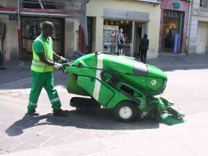And yes, in France there really is a Dog Shit Patrol: a subclass of the Parisian police force which manifests itself in a brigade of sixty-or-so green lawnmower motorcycles. These patrol vehicles search and scan for errant piles, circumnavigating city streets deemed most popular by tourists and politicians. Meanwhile, obese dogs are rapidly catching up to overweight French kids, with their sagging stomachs and bulging sides capable of depositing increasingly larger and more voluminous pockets of dog shit. Every few months, dog shit gets tracked in by the news. Investigators discover "rooms filled with dog feces" in homes where neglected, emaciated children await rescue. Hundreds of animals are liberated from "cages lined with filthy dog droppings," in the homes of animal hoarders. Inevitably, whenever police storm into a person's home and encounter piles of garbage, the chances of discovering "piles of dog shit" are exponentially increased. 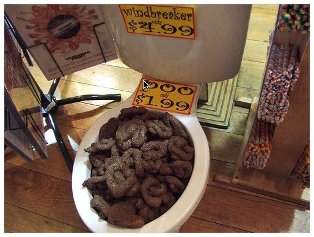If you're an animal hoarder who resides in a rural apartment complex with a strict no-dogs-allowed policy, you can still get several hundred fake dogs. In its first week on the U.S. market, the Nintendo corporation sold a quarter-million units of Nintendogs: small, handheld devices which simulate the high-polygon dog ownership experience while tastefully eliminating the need for mylar poo bags. If the idea of feeding, walking, and playing with fake dogs doesn't tickle your fancy, maybe you'd prefer a house full of fake dog shit, which comes in a variety of shapes. Machine-molded plastic dollops and rubberized poostuffs are key staples of novelty shops around the world. This "gag" gift makes it possible for apartment dwellers (or the financially disadvantaged) to circumvent traditional health code regulations and simulate the everyday presence of dogs in their homes or offices. Fake dog shit really fills the void. 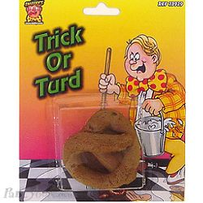A softer, suppler variant of plastic dog shit can be created with organic ingredients right in your own kitchen. Just ask Hollywood prop master Mark Jameson, who was charged with just such a task when actors in The 'Burbs (Tom Hanks, 1989) complained they didn't want to step in the real thing: "We had a mixture of canned dog food, bean dip, and various other nasty-looking food items. After mixing the concoction, we loaded it into empty caulking tubes and squeezed it out where needed. It placed a perfectly-shaped dropping." Dateline Germany, January 2005. Police in the sleepy hamlet of Bayreuth are in a bit of a pickle. Someone -- or something -- is jamming miniature toothpick flag portraits of U.S. President George W Bush into piles of dog shit on sidewalks, public parks, and pedestrian thoroughfares. Josef Oettl, parks administrator for Bayreuth, said: "This has been going on for about a year now, and there must be 2,000 to 3,000 piles of excrement that have been claimed during that time."
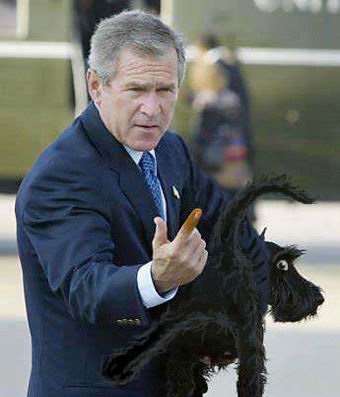The dog-shit-on-a-stick motif was originally thought to be some sort of protest against the US-led invasion of Iraq. When the structures survived for several consecutive seasons (weathering rain, snow, and extreme temperatures in all directions) the flags were thought to be a protest against Bush's campaign for re-election. In 2006, the dog shit Bush parade is still going strong. Police say they are completely baffled as to who might be responsible. "We have sent out extra patrols to try to catch whoever is doing this in the act," said police spokesman Reiner Kuechler. "But frankly, we don't know what we would do if we caught them red handed." Legal experts claim there's no law against using dog shit as a flag stand, although Federal legal analysts warn the Constitution is vague on the issue. One possible source of all the dog shit flags has been identified only as the makeyouthink online entity, which offers downloadable PDF templates for printing, folding, and concealing in a backpack.
To be sure, dog shit is annoying and problematic in every country -- but
is it really subject matter capable of depositing a huge, flaming
bag of controversy on the entire world's doorstep? The dog pooped right next to the old man and [the girl] was embarrassed so she said to dog, "What's wrong? You have not done that before!" She had many bags to carry so she was embarrassed. She didn't know what to do at the time. So my girlfriend took out a tissue from her bag and gave it to her and the old man, me and my girlfriend, gave her some space. She said thank you. And she sat down and cleaned the dog's anus with the tissue. I was ten meters distance from her. "Hey, you have to clean the poop, too. If you bring the dog, you have to be responsible for that," I yelled at her. 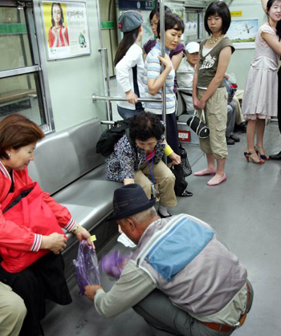From that time, people started paying attention to her. The ajumma [old woman] who was near her, said, "Hey, you have to clean! Clean! Clean the poop!" The ajumma pushed and threw a red rag at her to use to clean. I took out my camera and I was taking pictures and pushing her to clean the poop, but she didn't say anything. She was just looking at her dog and petting it. The subway way train got to Ahyun Station and when the doors open, she got off. At that time, she said something rude to the ajumma. Miss Kim, armed with digital and cellular photography equipment, snapped several quick pictures of the offending scene, making sure the girl's face was as visible as the dog shit, and extending the narrative pastiche to include other subway patrons begrudgingly cleaning up the dog shit for her. When Miss Kim returned home, she uploaded the images to her personal website, where they existed for many weeks accompanied by exactly the sort of "outrageous, what kind of ridiculous Paris Hilton world are we all living in" text one might glance at briefly in a blog but never actually read. But people did read, and yes, they were furious. How can you not want to rub her nose in it? The image was instantly popular, sparking a nation-wide dog shit hunt. The girl in the photograph became the subject of one of the earliest Internet memes in Eastern history, and quickly earned a new nickname: Gae-Ttong-Nyue, or "puppy poo girl" -- encouraging the Western translation of Dog Shit Girl. Viewers zoomed in on portions of the image: the dog, the bag, the girl's watch. Within days, she would be found and "punished" by an online mob, with a campaign of ridicule, harassment, impenetrable JPEG parodies, shaming techniques and all-out intimidation.
"I know I was wrong, but you guys are so harsh. I'm regret it, but I was so embarrassed so I just wanted to leave there. I was very irritable because many people looked at me and pushed me to clean the poop. Anyhow, I'm sorry. But, if you keep putting me down on the Internet I will sue all the people and at the worst I will will commit suicide. So please don't do that anymore." It should be noted that The Washington Post did not have the courage to call Dog Shit Girl by her full and complete alias, preferring instead to call her Dog Poop Girl. 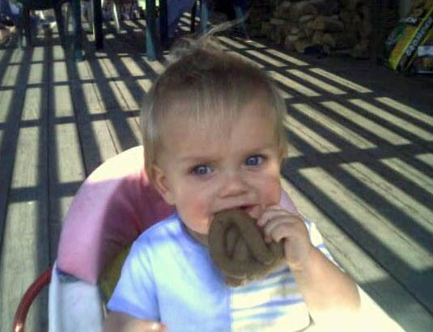Dog shit, dog shit, look at all the dog shit. What if people did that? What if human beings just left shit and piss all over the sidewalk? Can you imagine that crazy alternate upside-down backwards reality? Well, of course that's exactly what babies are doing all over our poor Mother Earth. There's shit everywhere, folks-- dog and otherwise. Nobody wants to talk about it, but human beings are increasingly mirroring the behavior of canines. Ever heard of Chinese mud flaps? Sure you have: they're snug, split-open half-pants which allow toddlers in China, India, and Kenya to run around naked from the waist down, dongs flapping in the breeze and buttocks exposed. When it's time for these kids to take a shit, they can do so quickly and easily -- even when they're right in the middle of playing jump rope! Chinese mud flaps also simplify the process of helping a young one squat over a hole, a common sight in regions of China unencumbered by modern architecture. Can Western civilization be far... "behind"? 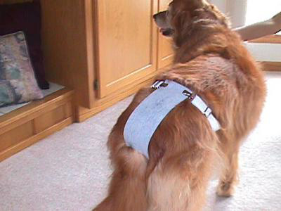Take a moment or two to recover from that joke, and then consider a report by Aimee Green in The Oregonian, who cites similarities between the world of dog shit and the world of people shit. Kelia Rawlinson is one of many new-wave mothers who believe, "Our culture is inclined to tell you you've got to wait for your children to pee or poop on themselves and go clean them up. But why make them pee and poop on themselves? They're not born to want to do that -- really what happens is, they end up marinating in it." And now you can get Chinese mud flaps for your dog, so he can shit everywhere without getting his pants dirty! What a country! Everywhere you look, every time you turn around, it all comes back to dog shit. 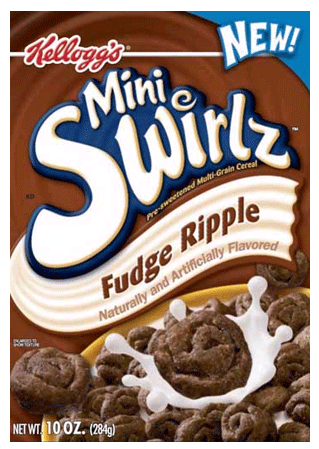Experts agree: it's an annoying, disgusting problem. While it hasn't exactly started World War III, one is still forced to wonder: is there anything good about dog shit? Well, certainly when trod upon at the scene of a crime, police can examine or identify footprints, tire tracks, and threaded bicycle trails by closely examining a pile of dog shit. And surely to some extent it could be collected en masse by special interest groups and used to fertilize the White House rose garden. And is it any wonder that some of the world's most popular snack treats are coiled, curly-cued, or otherwise fashioned in proud dollops which resemble the substance? It's true! You're the man now, dog shit. 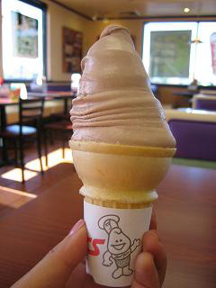Lift the self-service lid of a Safeway snack bucket and see what you come up with. Yogurt-covered clusters, chocolate-drenched nut clumps, and misshapen carob-coated marshmallows melting in the noonday sun, to observe just a few. Ironically, it must be reported that none of these treats should ever be fed to your dog. And look at those lincoln-log-shaped peanut butter filled pretzels sprinkled with enormous salt crystals like the kind you'd see in the laboratory of a sewage treatment plant. Christ, they're awful. So are Cheetos™ Cheese Puffs which quite frankly mirror the individually placed, cylindrical cross-sectionals of orange dog shit stiffening on the lawn after several days of exposure. Softly served ice cream treats such as the kind dispensed at fast food restaurants like Dairy Queen or Foster's Freeze are not above an appropriate level of comparison, either. And never one to eschew obfuscation, the McDonald's restaurant corporation strictly insists all their frosty dog shit swirls be referred to as kiddie cones in store menus, drive-thru windows and braille supplements throughout North America. |
 She
was treated like a public enemy, according to the JoongAng Daily. Internetters
began visiting the Web site of the university they assumed she attended, and
bombarded it with posts, effectively crashing the server. When an administrative
staff member finally saw a photo of the Dog Shit Girl, it was determined there
was no such student in the university's records. Nevertheless, the young woman
was eventually forced to capitulate with an online apology, which in time made
the whole thing blow over:
She
was treated like a public enemy, according to the JoongAng Daily. Internetters
began visiting the Web site of the university they assumed she attended, and
bombarded it with posts, effectively crashing the server. When an administrative
staff member finally saw a photo of the Dog Shit Girl, it was determined there
was no such student in the university's records. Nevertheless, the young woman
was eventually forced to capitulate with an online apology, which in time made
the whole thing blow over: